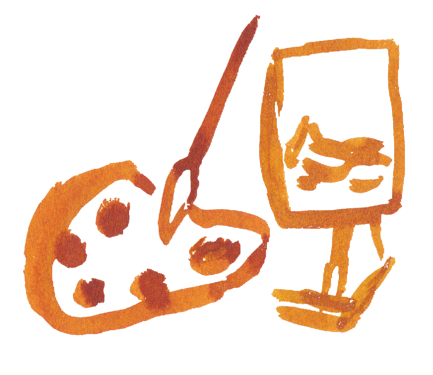
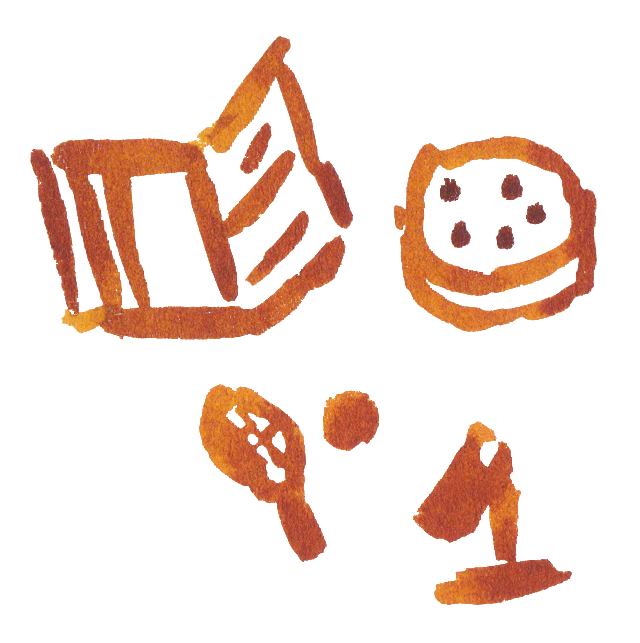
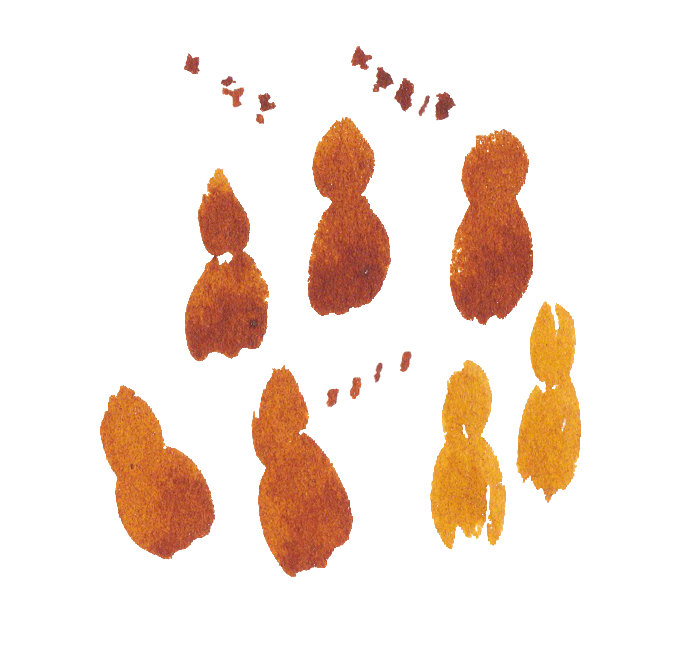

Hi I'm Alice!
I am a practising artist and curator with 15 years of professional experience in the art world. I co-founded an alternative residency near Berlin, and during this time, I have exhibited internationally, sold my work in contemporary art fairs, and held my first solo museum exhibition in Germany in 2022. I was also represented by a commercial gallery for five years. While pursuing my Master's in Fine Art in London, a collaboration with a fellow student sparked my interest in the intersection of computer technology and nature, leading me to explore web development. This shift in focus ignited a passion for understanding computer systems and modern web tools. I now seek to apply my creativity and problem-solving skills in a new career as a full-stack web developer, specialising in front-end frameworks and non-relational databases. I’m excited to leverage my experience in project management, design, and collaboration in a flexible, team-oriented environment.
Some fun facts about me!
I love to travel and have been on residencies in Tbilisi, Hong Kong, Japan, Denmark and Czech Republic!
I am a passionate artist and love to paint and draw!
Favourite things I like to do are; swim, read, play tennis, visit museums and get nerdy about microbiology!
I am a very social person and love to connect with people!